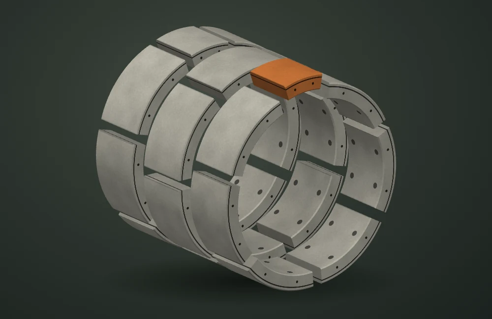

Asset credits
Tunnel illustrations
The cutaway and interior are illustrative stills generated for this portfolio with OpenAI ImageGen. The cutaway shows a segmental lining within a block of layered ground. The interior shows the same type of lining from inside a tunnel. The link preview uses a crop of the interior.
Cutaway production prompt
Use case: stylized-concept. Cinematic, materially realistic architectural section perspective of a generic segmentally lined TBM tunnel for a geotechnical engineer's portfolio. A wide landscape hero, about 2.4:1. A single substantial physical geological specimen with a large circular tunnel running through it. Only the RIGHT 60 percent of the wide frame is occupied by this monolithic cutaway; the LEFT 40 percent is clean, nearly black charcoal studio atmosphere for overlaying HTML type. Eye-level three-quarter view looking into the tunnel mouth from the left front. Closest circular masonry opening at 67 percent of frame width. The length of the cut block slopes back toward the upper right edge. The tunnel mouth reveals pale, convincingly thick precast concrete segments in a staggered ring arrangement; individual radial joints are immediately legible. Look through it into at least a dozen receding rings and a very clear vanishing point. Tiny practical amber work lamps, cable trays and a damp cast concrete floor inside. The cut earth above, beneath and to the side is a cohesive, squared section of natural stratified geology: uneven elegant bands of clay, silt, sand and grey fractured rock in walnut, graphite and ochre. Rising slightly at the back, uncropped modest surface relief at top. This should look like a beautifully lit museum cutaway, not a building or a tunnel portal on a hillside. Hard through-cut sidewalls, hand-sample quality rock texture, matte concrete, strong physical depth and shadow. Soft raking overhead light, silvery concrete highlights, delicate amber glow deep within. Deep blue-black charcoal background, restrained chiaroscuro, ground contact shadow, no distracting objects. Luminous subject legible in a dark website composition. No letters, labels, text, arrows, signs, grids, UI, branding, neon, crosshairs, people or equipment outside the cutaway. One continuous image, no panels, no border. It is an illustrative model, not a photograph of an identifiable location.
Production prompt
Use case: photorealistic-natural. A single cinematic illustrative still for a geotechnical research engineer's editorial portfolio. Wide 2.4:1 horizontal frame. Eye-level view down the interior of a segmentally lined circular TBM tunnel during construction. Strong, legible repeating rings of damp precast concrete with staggered segment joints, modest bolt recesses and dark stains; narrow orderly industrial cable trays follow the wall; small practical work lights illuminate the masonry. Perspective vanishing point at 70 percent from the left, slightly below the horizontal midline. Cool neutral charcoal shadows, warm amber work lights and a trace of atmospheric haze in the distant bore, restrained natural film grain. Closely observed texture and compelling depth even as a small crop. Left third is the nearby concrete wall in deep open shadow for separately overlaid HTML type. This is a generic engineered illustration with no identifiable site, machinery logos, people, legible lettering, signage, graphics, borders, dashboard, HUDs, or typography. No blue neon, sci-fi or fantasy. Editorial architectural still, eye-level and camera straight, physical realism.
Segmental lining model

The interactive model uses original, simplified three-dimensional geometry drawn for this portfolio. Rotating the model reveals the staggered joints. Separating the rings and segments exposes the mating faces. The copper tint identifies a crown segment. View the model still

GeoModel3D
The terrain cutaway and A–A′ profile are crops of Kursat Kilic’s screenshot of the Sakae model in GeoModel3D. Both are saved as WebP. The full-size JPEG retains the complete interface, axes and in-app attribution. Full screenshot · Original screenshot · Apache License 2.0


Borehole data from KuniJiban (MLIT, PWRI and PARI). Basemap and terrain credit to GSI Tiles, Geospatial Information Authority of Japan, and © OpenStreetMap contributors. Project data sources · OpenStreetMap attribution
Lithology
Original HTML bar chart of the three ground-class proportions reported by Kilic, Ikeda, Adachi and Kawamura (2023). Percentages are rounded as published. Source article
Cutter wear
© 2022 Kursat Kilic, Hisatoshi Toriya, Yoshino Kosugi, Tsuyoshi Adachi and Youhei Kawamura. “One-Dimensional Convolutional Neural Network for Pipe Jacking EPB TBM Cutter Wear Prediction,” Applied Sciences 12(5), 2410. Figure 15 cropped to panel (a) and resized. Article · Original figure · CC BY 4.0

Logo, typography and icons
Instrument Serif © 2022 The Instrument Serif Project Authors. DM Sans © 2014 The DM Sans Project Authors. The site serves Latin WOFF2 subsets from Google Fonts. Instrument Serif license · DM Sans license
Kursat Kilic supplied the KK Tunnel Tech logo. The masthead uses a resized copy with the outer padding trimmed. Original artwork

The tunnel cross-section favicon and interface icons were drawn for this portfolio.